day23 学习笔记
一、数据库
1.1 数据库 基本知识
DB：
DBMS：
数据库，数据表，表的结构。。
DB：是指datebase（数据库） 数据库是存储数据的一个集合，数据库中通常使用数据表等组成，而数据表是由数据的字段和数据的值等信息组成。 DBMS:是指datebase mangement systerm（数据库管理系统） 它是操作数据库和管理数据库的一个系统，比如mysql、sqlserver等都是属于数据库管理软件，人们通过这些系统或者工具来管理数据库内的数据。 DBS:是指datebase systerm (数据库系统） 数据库系统又数据库和数据库管理软件等组成，数据库是一个逻辑上的存储数据的概念，而对应的是实体是数据库管理软件存储存储在硬盘上的数据库，所以数据库系统包含数据库和数据库管理软件。
1.2 Mysql的安装和卸载
1.3 登录
方式一：DOS窗口：输入以下命令：
C:\Users\ruby>mysql -u root -p
回车后输入密码即可
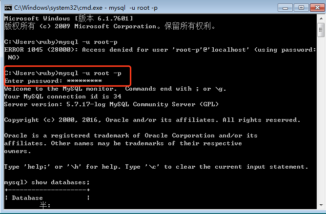
方式二：通过Mysql的Command Line来登录：
直接输入密码即可
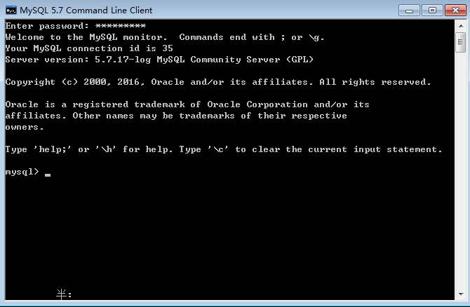
方式三：通过其他的可视化工具软件：
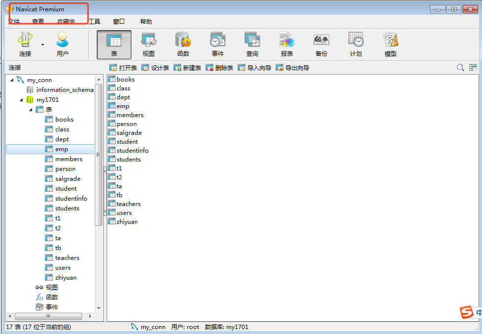
1.4 创建数据库：
1.创建数据库：
//create database [if not exists]数据库名 [default charset utf8 collate utf8_general_ci];
mysql> create database my1905 character set utf8;
Query OK, 1 row affected (0.00 sec)
2.显示有哪些数据库：
mysql> show databases;
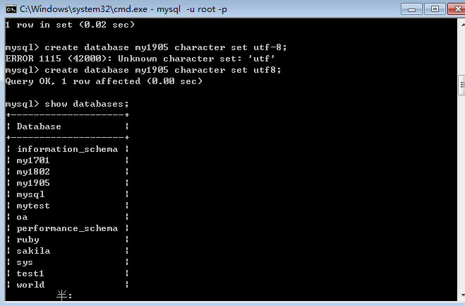
3.切换到数据库：以后的操作都是针对该数据库的，比如建表。。
mysql> use my1905;
4.查看当前数据库有哪些数据表：
mysql> show tables;
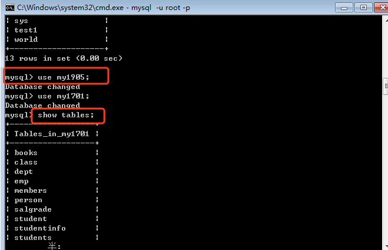
5.删除数据库：
mysql> drop database if exists my1905;
1.5 数据类型
char(10)-->定长的字符串
"wangergou "
"abc "
varchar(10)-->变长
"wangergou"
“abc”
1.6 数据表的操作
1.创建数据库：
mysql> create database if not exists my1905 default charset utf8 collate utf8_ge
neral_ci;
2.创建数据表：
mysql> create table users(
-> id int(4) primary key auto_increment,
-> username varchar(20),
-> pwd varchar(30));
3.查看表结构：desc-->describe
mysql> desc users;
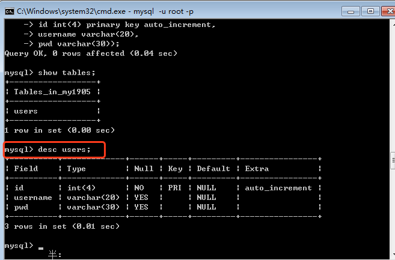
4.显示检表语句：
mysql> show create table users;
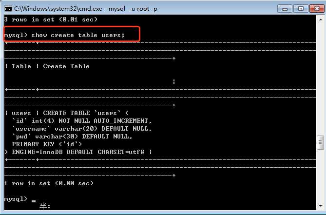
注意点：
1.先创建数据库
mysql：
database1-->oa
database2-->bluebird
。。。。
2.切换数据库
use 数据库名
3.创建数据表
mysql>create table test1(
->id int(4) auto_increment primary key,
->......);
5.插入一条数据：
mysql> insert into users(id,username,pwd) values(1,'admin','123456');
Query OK, 1 row affected (0.02 sec)
6.查询数据：
mysql> select * from users;
+----+----------+--------+
| id | username | pwd |
+----+----------+--------+
| 1 | admin | 123456 |
+----+----------+--------+
1 row in set (0.00 sec)
1.7 修改表结构
alter table 表名 xxx。。。
添加字段:add
mysql> alter table users add( -> age int(4), -> birthday date);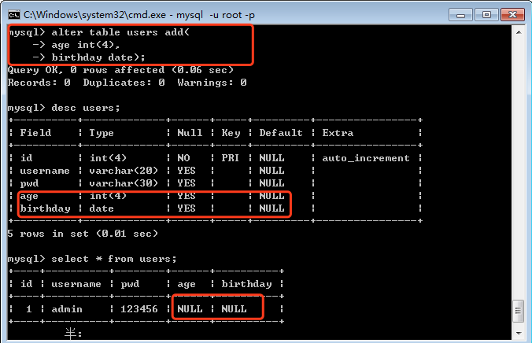
修改已有字段的数据类型：modify
mysql> alter table users modify age float(4,1);
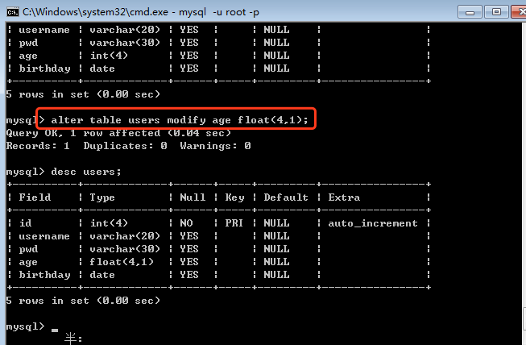
注意点：并不能随意的更改已有列的数据类型。尤其是表中已经有数据了
A：兼容类型：长度可以从小到大，不能已有的数据越界。
B：不兼容类型：varchar-->int，更改失败。
3.更改列的名字：change
mysql> alter table users change pwd password varchar(30);
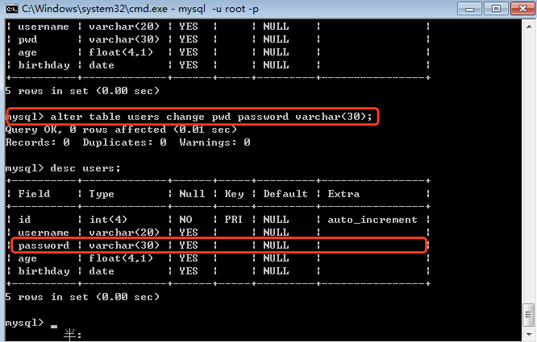
删除某列：drop
mysql> alter table users drop birthday;
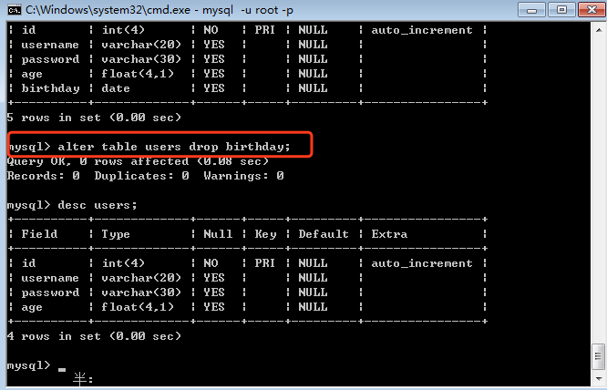
如果该列存在数据，那么数据也会被删掉。
5.表重命名：rename to
mysql> alter table users rename to user2;
mysql> rename table user2 to user3;
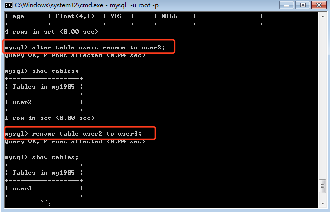
6.删除表：drop table
mysql> drop table user3;
1.8 插入数据
1.插入数据：
insert into 表名(列1，列2，列3.。。) values(值1,值2,值3.。。)
全列插入：如果有所有列都要插入数据，那么可以省略列的名字
缺省插入：如果有某一个或一些字段没有数值，那么就要写清楚列名和值。
同时插入多行：
1.9 修改数据
语法结构：
update 表名 set 列1=值1,列2=值2...[where 条件];
where后是修改条件：为true，才会修改数据。
运算符：
=，数值相等
!=，<>，数值不等
between ... and，区间
>
<
>=
<=
or
and
in(值1，值2，值3.。)
1.修改学号为1006的同学姓名为陈聪
mysql> update student set name='陈聪' where no=1006;
Query OK, 1 row affected (0.00 sec)
Rows matched: 1 Changed: 1 Warnings: 0
mysql> select * from student;
+------+--------+------+------+------------+
| no | name | age | sex | birthday |
+------+--------+------+------+------------+
| 1001 | 王二狗 | 18 | 男 | 2007-10-10 |
| 1002 | rose | 19 | 女 | 2006-09-09 |
| 1003 | jack | 20 | 男 | 2005-08-06 |
| 1004 | 张三 | 18 | 女 | 1990-12-12 |
| 1005 | 李四 | 21 | 男 | 1991-06-08 |
| 1006 | 陈聪 | 22 | 男 | 1992-10-10 |
+------+--------+------+------+------------+
6 rows in set (0.00 sec)
2.年龄小于19岁的同学，性别改为女
mysql> update student set sex='女' where age < 19;
Query OK, 1 row affected (0.01 sec)
Rows matched: 2 Changed: 1 Warnings: 0
mysql> select * from student;
+------+--------+------+------+------------+
| no | name | age | sex | birthday |
+------+--------+------+------+------------+
| 1001 | 王二狗 | 18 | 女 | 2007-10-10 |
| 1002 | rose | 19 | 女 | 2006-09-09 |
| 1003 | jack | 20 | 男 | 2005-08-06 |
| 1004 | 张三 | 18 | 女 | 1990-12-12 |
| 1005 | 李四 | 21 | 男 | 1991-06-08 |
| 1006 | 陈聪 | 22 | 男 | 1992-10-10 |
+------+--------+------+------+------------+
6 rows in set (0.01 sec)
3.年龄大于等于18岁，并且小于等于19岁的同学姓名改为马冬梅
mysql> update student set name='马冬梅' where age >= 18 and age <= 19;
Query OK, 3 rows affected (0.01 sec)
Rows matched: 3 Changed: 3 Warnings: 0
mysql> select *from student;
+------+--------+------+------+------------+
| no | name | age | sex | birthday |
+------+--------+------+------+------------+
| 1001 | 马冬梅 | 18 | 女 | 2007-10-10 |
| 1002 | 马冬梅 | 19 | 女 | 2006-09-09 |
| 1003 | jack | 20 | 男 | 2005-08-06 |
| 1004 | 马冬梅 | 18 | 女 | 1990-12-12 |
| 1005 | 李四 | 21 | 男 | 1991-06-08 |
| 1006 | 陈聪 | 22 | 男 | 1992-10-10 |
+------+--------+------+------+------------+
6 rows in set (0.00 sec)
4.修改年龄19到20岁之间的同学姓名为马春梅：
mysql> update student set name='马春梅' where age between 19 and 20;
Query OK, 2 rows affected (0.01 sec)
Rows matched: 2 Changed: 2 Warnings: 0
mysql> select * from student;
+------+--------+------+------+------------+
| no | name | age | sex | birthday |
+------+--------+------+------+------------+
| 1001 | 马冬梅 | 18 | 女 | 2007-10-10 |
| 1002 | 马春梅 | 19 | 女 | 2006-09-09 |
| 1003 | 马春梅 | 20 | 男 | 2005-08-06 |
| 1004 | 马冬梅 | 18 | 女 | 1990-12-12 |
| 1005 | 李四 | 21 | 男 | 1991-06-08 |
| 1006 | 陈聪 | 22 | 男 | 1992-10-10 |
+------+--------+------+------+------------+
6 rows in set (0.00 sec)
二、SQL
结构化查询语言(Structured Query Language)。操作数据库的。
DDL语言：数据定义语言(用于定义数据的表结构)Data Definition Language
创建数据表：create table 表名
修改数据表：alter table 表名
删除数据表：drop table 表名
DML语言：数据操纵语言(用于操作数据表中的数据)DML - Data Mainpulation Language
添加数据：insert
修改数据：update
删除数据：delete
DQL语言：数据查询语言(专门用于数据的查询)DQL - Data Query Language
查询数据：select
DCL语言：
三、总结
数据库：
安装和卸载(看文档)
数据库的登录：
1.dos窗口：mysql命令--->配置环境变量
-u 用户名
-p 密码
2.mysql的命令行：直接输入密码即可
3.通过一些可视化工具：比如navicat
1.show databases;
2.create database if not exists my1905 character set utf8;
default charset utf8 collate utf8_general_ci;
3.use my1905;
4.create table student(id int(4) primary key auto_increment，name varchar(30),sex varchar(2))；
5.alter table 表名
add 列名 数据类型
modify 列名 数据类型
change 原列名 新列名 数据类型
drop 删除列
6.drop table 表名;
7.insert into 表名(列1，列2，列3.。。) values(值1，值2，值3.。。。)
全列插入：
同时插入多条：
8.update 表名 set 列1=新值，列2=新值 [where 修改条件];
where 后 的是表达式是boolean
=,!=,<>,>,<,>=,<=,between and, and , or ,not ....
null---> is null ,is not null
9.delete from 表名 where 删除条件
约束：主键，外键
查询：简单查询，复杂，多表